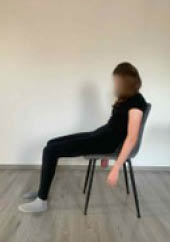
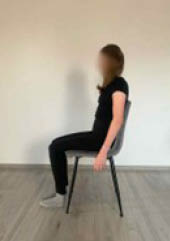

Pozycja siedząca
Prawidłowa postawa ciała w pozycji siedzącej (rycina V.5.2) – usiądź całymi pośladkami na krześle, nie przechylaj się w prawo ani w lewo, wyprostuj plecy, opuść ramiona, cofnij brodę. Możesz sprawdzić, czy symetrycznie obciążasz biodra, umieszczając ręce pod pośladkami, wyczuwając twarde kości, na których siedzisz (guzy kulszowe). Przenieś ciężar ciała raz na jedną, raz na druga stronę, poczuj, kiedy siedzisz niesymetrycznie i spróbuj rozłożyć ciężar ciała po równo. Na rycinie V.5.3 przedstawiono nieprawidłową pozycję siedzącą.
Rycina V.5.2. (po lewej)
Prawidłowa pozycja siedząca
Rycina V.5.3. (po prawej)
Nieprawidłowa postawa ciała w pozycji siedzącej


Podczas wykonywania każdego z poniższych ćwiczeń przyjmij na początku prawidłową pozycję wyjściową!
Fizjoprofilaktyka – aktywne przerwy w szkole
463